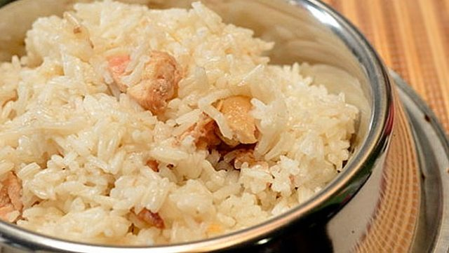
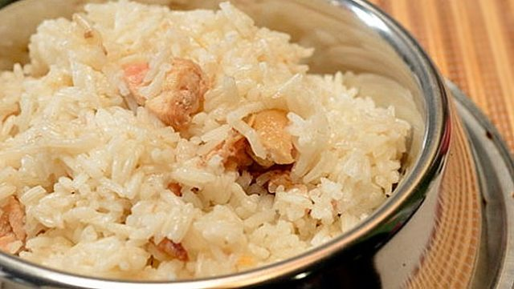
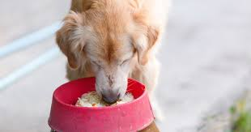

Recetas Caseras para Perros
Arroz con pollo
Un buen plato de Arroz con pollo como me lo hacía mi abuela pero adaptado a la alimentación de
nuestros peludos es una excelente receta por su alto nivel nutritivo. Además de ser muy completa,
tu amiguito disfrutará de un plato muy sabroso.

Un buen plato de Arroz con pollo como me lo hacía mi abuela pero adaptado a la alimentación de nuestros peludos es una excelente receta por su alto nivel nutritivo. Además de ser muy completa, tu amiguito disfrutará de un plato muy sabroso.
¿Que necesitamos?
- Arroz: Podemos optar por arroz blanco, ya sea de grano largo o corto y redondo, o por arroz integral. Si elegimos este ultimo debemos saber que el arroz integral tiene mucha fibra por lo que es estrictamente necesario no abusar de este ingrediente y que alternemos con el arroz blanco, porque puede provocarle diarrea a nuestro animalito, asi como malestar intestinal.
- Pollo: Lo ideal es buscar partes limpias, sin huesos ni tendones. Por ello es recomendable usar pechugas y trocearlas para facilitar su cocinado.
- Agua: Para hervir los dos ingredientes.Cuatro tacitas por cada una de arroz.
¿Como preparamos esta reseta casera?
Podemos cocinar ambos ingredientes por separados o cocinar el pollo a la plancha y luego mezclarlo todo, pero sabra mejor si cocemos el arroz en el caldo de pollo. Por este motivo lo primero que haremos sera trocear el pollo y ponerlo a cocer en una olla con suficiente agua.Los trozos deben ser de pocos centimetros segun el tamaño del animal.
Cocer el pollo: 15 minutos
El tiempo aproximado de coccion es de 15 - 20 minutos. Si elegimos cocer las pechugas enteras o elegimos una parte del pollo que contenga huesos, dejamos la carne mas tiempo para asegurarnos de que este bien cocida y despues desmenuzarla con cuidado.
Cocer el arroz: 20 minutos
Reservamos el pollo y colamos el caldo que nos ha sobrado de cocer la carne para preparar el arroz. Debe estar limpio de grasa y de impurezas. Una vez que lo tengamos de nuevo en la olla lo ponemos a hervir. Recordar siempre que por dos tazas y media de caldo vertemos una de arroz. En el instante en el que el agua con el arroz vuelva a hervir, bajaremos el fuego y lo dejamos 20 minutos cociendo a fuego bajo para que el arroz este en su punto.
¡Mezclar y servir!
Una vez que este cocido,lo retiramos del fuego y esperamos a que se enfrie. Despues mezclamos el arroz con el pollo y le servimos una porcion en el plato.Podemos guardar si nos ha sobrado algo en un taper y dejarlo en la nevera hasta que se lo demos todo.
¿Qué beneficios tiene el arroz con pollo para los perros?
- Bajo en grasas y sodio.
- Es altamente digerible, lo que hará que nuestro perro pueda comer en esos días que está más débil.
- Altos niveles de carbohidratos que son muy saludables para nuestro perro.
Tambien podemos hacerles a nuestros perritos otras recetas como un buen Arroz con Verduras como el que a continuacion te presentamos: Siempre consintiendolos con nuestro buen sabor en la cocina!